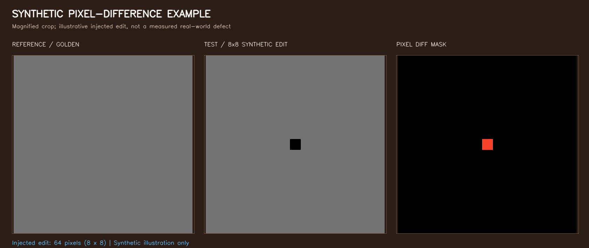

可變版型電子檔檢測原型
針對非固定模數、多尺寸混排與不規則排列印刷版面，設計並迭代的高速電子檔檢測系統。 支援智慧模位邊界偵測、人工防呆檢視、自適應角點準星對位，以及逐模位零容差像素差分引擎。
問題背景與目標
傳統印刷檢測系統多仰賴預設模數、固定尺寸或均勻網格切割。當生產版面轉為混款、缺格、密集或不規則排列時，固定規則容易產生漏檢、黏框或誤把板材外圍納入比對等誤報。
任意模數與混款分群
不預設單一尺寸網格，自動識別版面中的標籤幾何邊界，依模位長寬自動聚合分群。
建版候選與防呆確認
自動演算法作為輔助建議，提供人員在 Web 畫布上進行縮放、微調與重疊診斷，避免誤判保存。
特徵準星精準對位
支援十字準星與特殊角點標記，具備幾何平移與微小旋轉校正，對位不足自動轉為 REVIEW 狀態。
限定模位零容差差分
只在保存之模位有效框內進行高速逐像素運算，精確回報差異像素座標與所在模位編號。
系統工作流程
合成展示與差分視覺
以下圖檔由專案內之可重現合成測資產生，用於說明檢測流程與像素級精度標記：


六大合成案例驗證指標
在去識別化驗證套件中，完整 18 項測試全數通過。以獨立產生之 Ground Truth 進行逐框嚴格評測：
| 合成版型案例 | 特徵與難點 | 模位總數 | 最低 IoU | 漏框 (FN) / 誤框 (FP) / 黏框 | 狀態 |
|---|---|---|---|---|---|
| layout_24_large | 大尺寸、淺色底色 | 24 | 0.9979 | 0 / 0 / 0 | PASS |
| layout_60_mixed | 長條與方形混合多尺寸 | 60 | 0.9937 | 0 / 0 / 0 | PASS |
| layout_40_missing | 網格中預留特定空格 | 40 | 0.9956 | 0 / 0 / 0 | PASS |
| layout_180_dense | 高密度小模位緊湊排列 | 180 | 0.9909 | 0 / 0 / 0 | PASS |
| layout_36_custom_fiducial | 自訂特殊準星、單角低對比 | 36 | 0.9956 | 0 / 0 / 0 | PASS |
| layout_random | 不規則排列、多尺寸緊間距 | 45 | 0.9914 | 0 / 0 / 0 | PASS |
* 註：六種案例之最大邊界誤差均控制在 ≤ 1 px 內，模位候選能精確吻合目標輪廓。
工程邊界與關鍵洞察
外部影像經過不同壓縮或重新編碼（如 JPEG）後，即使肉眼看起來完全相同，解碼後之數值矩陣仍可能因量化雜訊產生細微差異。零容差檢測流程能精確標示此差異；因此「準星成功對位」並不等同於「模位內容必然逐像素相符」。
對位的亞像素邊界觀察
在整數像素平移情境下，準星估計算法可完美復原並達成零差異。但若涉及小數像素平移（如 +2.5, −1.3 px）或微小旋轉（0.15°），影像重採樣（Resampling）將在邊緣產生過渡像素，導致全版模位受波及。此現象作為演算法邊界觀察，在產線驗收時需明確區分編碼插值與物理瑕疵。
技術棧與實作範疇
- 核心演算法：Python、OpenCV、NumPy、SciPy（輪廓幾何分析、仿射對位矩陣、ROI 差分）。
- 前端工作台：原生 HTML5 Canvas、CSS3、現代 JavaScript（輕量無框架依賴、具備防呆警告與直覺標註功能）。
- 通訊與控制：微型 Python HTTP Server、虛擬 PLC 控制器狀態模擬（PASS / FAIL / REVIEW / ERROR）。